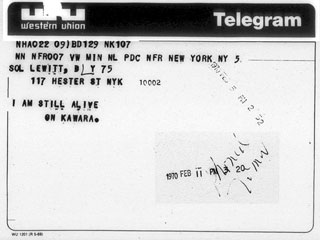
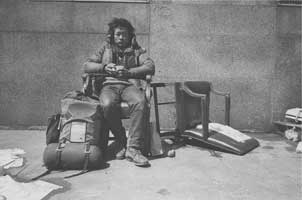

Marcel Duchamp
At that time, I was preoccupied with the idea of doing a certain thing in advance, of declaring "at such and such an hour I'll do this ...". I never did it. I would have been embarrassed by it.
Marcel Duchamp about the period of the first readymades (1914/1915). In: Pierre Cabanne: Entretiens avec Marcel Duchamp. Paris: Belfond, 1967. [Trans. by Ron Padgett: Dialogues with Marcel Duchamp. New York: Da Capo Press, 1987, p. 49.]
Ben Vautier
Moi Ben J'ai entièrement
vécu 15 nuits et jours dans la vitrine de la Gallery ONE à Londres à l'exposition
des Misfits. Cela dans le cadre de Ma prise de conscience et Ma
prise de possession de la notion de TOUT; en tant qu'oeuvre d'art.
(1960). Je suis sculpture vivante et mobile en tous Mes instants
et tous Mes gestes
[...].
Ben (1962)
FAITES COMME D'HABITUDE
Ben (1964)
A 650 Km de Venise / A Nice, dans
le département des Alpes-Maritimes / 32, Rue Tondutti de
l'Escarène / A partir du 18 Juin 1966 / Durant toute la
Biennale de Venise / BEN VIVRA COMME D'HABITUDE / Chaque
jour il inscrira dans un cahier Fluxus / Les détails insignifiants
et marquants de sa journée. / Et, à la fin de la Biennale
de Venise / ce cahier / daté et signé / Représentera / LA
VIE DE TOUS LES JOURS
Contribution de Ben à la Biennale de Venise 1966
[Source: Ad Petersen (ed.): Art = Ben. Stedelijk Museum,
Amsterdam, 1973, pp. 12/17/27.]
On Kawara
 |
On Kawara: "I am
still alive."
Telegrams, since 1970.
Left: Telegram to Sol LeWitt, February
1970.
|
.
Linda Montano
For many years I have been framing my life and calling it art, so that everything - washing dishes, making love, walking, shopping, holding children – is seen as art. Formerly, I would separate out activities – run to the studio and that was my "creative time." Gradually I found this separation unnecessary and felt that it was important for me to be attentive all of the time – not to waste a second. That became the Art/Life task that I have given myself until I die.
I made many pieces from 1969 on that experimented with this idea of allowing my life to be a work of art. I lived with different people and called that art. I wrote the Living Art Manifesto in 1975, and later turned my home into a museum so that everything I did there would be framed as art. I lived in galleries. I was sealed in a room for five days as five different people. All of it was an attempt to make every minute count.
Linda Montano. In: Alex and Allyson Grey: "The Year of the Rope: An Interview with Linda Montano & Tehching Hsieh" High Performance Magazine, Fall 1984, pp. 24-29.
Tom Marioni
"Kunst ist eine poetische aufzeichnung
des Lebens, sie trifft eine Auswahl und kann deshalb nicht
dasselbe sein, weil das Leben von Gott gemacht ist, während
die Kunst von Menschen gemacht wird. Es ergäbe eine Widerspruch,
wenn Kunst und Leben identisch wären. Wenn jemand behauptet,
das wäre nicht so, dann versteht er nichts von Kunst. [...]
Der Künstler ist ein Lebenskünstler, einer der lebt und das
Leben berufsmässig betreibt. [...] Er studiert das Leben und
kennt die Geheimnisse für ein gutes Leben."
Tom Marioni
in conversation with Kirsten Martins. In: Künstlerhaus Bethanien
(eds.): Performance:
eine andere Dimension. Berlin: Frölich & Kaufmann,
1983, pp. 129-134. [p. 133]
Tehching Hsieh
 |
Tehching Hsieh (a.k.a. Sam Hsieh):
Four
One-Year Performances, 1978-1984.
Left: Snapshot from One
Year Performance
1981-1982. (Photo: Tehching Hsieh.)
|
Lydia Schouten
"Ich möchte, das fast mein
ganzes Leben Kunst ist. Ich glaube, dass alles, was ich rein-stecke,
wiederum mit meinem Leben zu tun hat. [...] Ich habe mich entschlossen,
alles ineins zu packen [...] aber ich will, dass es was besonderes
ist. Du gibst dem Leben [...] einen besonderen Akzent, du verschönert
es."
Lydia Schouten in conversation
with Kirsten Martins. In: Künstlerhaus Bethanien (eds.): Performance:
eine andere Dimension. Berlin: Frölich & Kaufmann, 1983,
pp. 159-163. [p. 163]
|